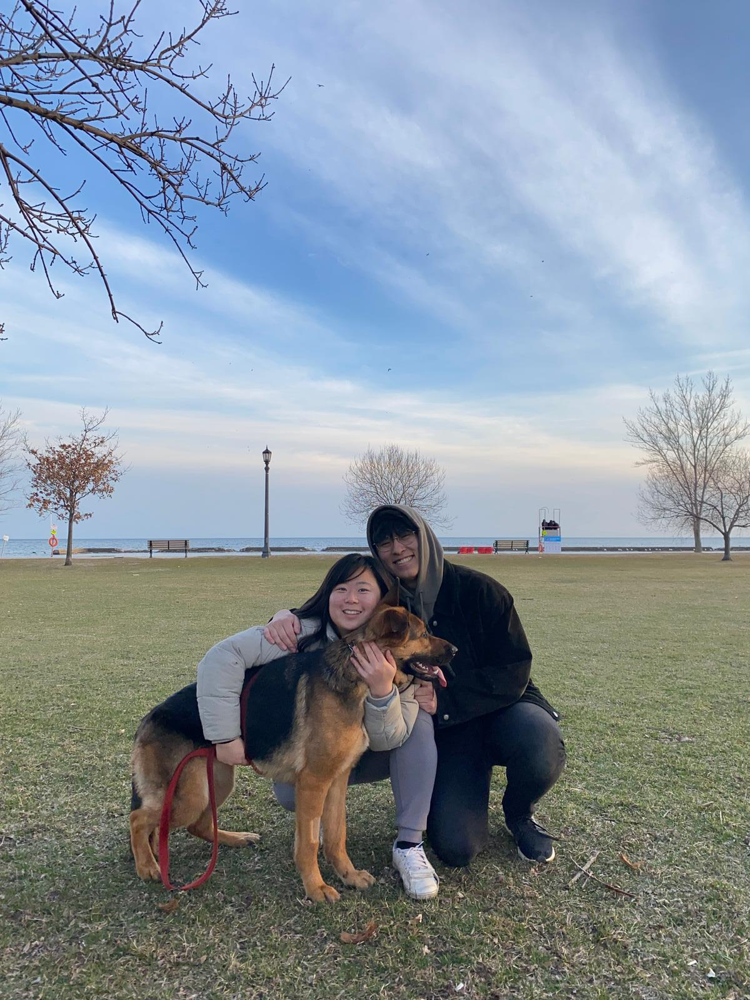

About me
I'm Stanley — Canadian born, Toronto-grown. I've built my career in early stage startups predominantly across the U.S.; Over the past 5 years, I've scaled 3 companies (and counting!) from near-scratch, because there is no greater novelty and excitement than making something out of nothing.
I like being early. I like figuring out the thing no one has figured out yet. I like building teams and systems that outlast me and jumping on to the next exciting thing.

Background
Proudly Canadian. Born to immigrants from Hong Kong and China, raised in Toronto. I learned to embrace culture and love diversity while breaking bread in the houses of childhood friends: Kenyan; Persian; Korean; Romanian; many more.
Studied at the Ivey Business School, Western University, London ON. Was not going to be a doctor, and this was other minimally acceptable career path.
Learned very quickly after graduating that I did not do well in bureaucratic, hierarchichal environments. Barely lasted a year in consulting.
I had never planned to leave Canada (I'll 100% be back), but a chance date and a bold ultimatum convinced me to move to America with her - startups ended up being the medium through which I did it, and I've loved it ever since.
(P.S. We've been together since 2020 and have a German Shepherd!)
How I work
Extreme bias to action, high agency. I like being pointed in a direction and told to let it rip. I do not operate well under micromanagement. I work hard to keep people in the loop for important decisions, but expect trust for small things.
I learn best through documenting brain dumps, then taking direct action - this lets me capture all the context (especially unwritten/implicit knowledge) a team has, then commit it to memory through practical application. It also helps me hit the ground running and generate immediate value.
I give feedback candidly but kindly, and hope for the same back. Tell me if I'm fucking up; don't be an asshole about it. I may challenge some of your feedback/assumptions; I expect you to do the same back (none of us are perfect!)
No matter what I do, I will always treat you as people first, colleagues second. Yes, we work hard; life is still short, we are still human.
In real life, I am a goofy goober (I swear to you. I will be serious about my work and literally nothing else LOL)
I firmly believe you cannot be a good product builder without a deep sense of empathy for others. I approach all product building first-principles, user-first. I'm not afraid to make assumptions and test things out, but if we've built a whole MVP without talking to a paying customer or even engaged user, we've done something wrong.
Tactically, I try to avoid overstructure where I can (I refuse to EVER t-shirt size a ticket), but absolutely believe in finding systems that work for the long-haul even if there's some initial pain (practical ticket templates, project workflows, timelines).
I am pragmatic above all else - if something sucks and doesn't work, I will never keep it out of ego. Strong opinions held loosely, always.
What I care about
Outside of work
I make clothing inspired by whatever I feel drawn to at a given point in my life. We've printed hoodies; t-shirts; hats, sweaters; inspired by mythology; anime; video games; modern art. All for friends and family, all sold at cost - just a creative outlet for me!
My partner and I run a mini-product lab where we make stuff for ourselves. Little apps, decorations, hardware - little bits and bobs that spark joy!
Lately: We drew and framed our own prints inspired by our favorite restaurants, made an LED display to show subway arrival times, and vibe-coded a calorie-tracking app!
I run a small blog to write prose and wax poetic about things in my life and how I feel about them. Sometimes polished, sometimes ugly. The writing isn't meant to be professional, just candid - in the hopes that somebody connects.
I love interior design (working on my apartment now). I play video games, guitar, and fetch (with my German Shepherd)! Love fashion, Formula 1, anime, anything between.
Lately: I've been hosting a lot of dinner parties! Helping people connect and bond (as friends, unconditionally, in the most non-techy way possible) brings me a lot of joy.